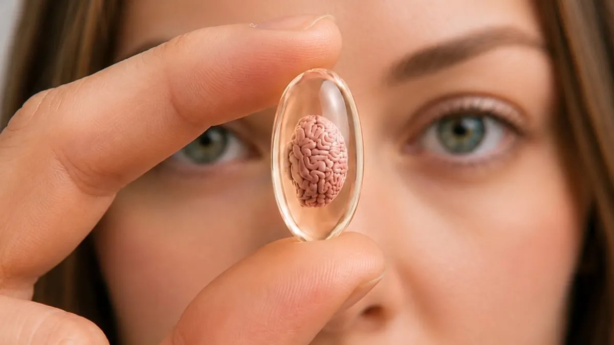

Dit evenement is afgelopen. Bekijk wat er binnenkort te doen is.
Evenement
Science Café: Kunnen we ons brein hacken?
- Wanneermaandag 7 september 2026, 19.30 tot 22.00 uur
- WaarIrish pub The Shamrock
Smetiusstraat 17 Nijmegen Route

We willen allemaal een betere, slimmere, snellere versie van onszelf zijn en steeds vaker grijpen mensen hiervoor naar een pil. Studenten nemen Ritalin voor een tentamen, werkenden grijpen naar modafinil. Een groeiende markt voor ‘smart drugs’ belooft het verborgen potentieel van je brein te ontsluiten. Daarbij wordt het verlangen naar een scherpere geest op latere leeftijd alleen maar urgenter wanneer het geheugen vanzelf begint te haperen. Maar werken deze middelen eigenlijk?
Achter deze pillen schuilt een heel samenspel van chemische boodschappers – dopamine en vele andere – die veel meer bepalen dan pure denkkracht alleen. Ze beïnvloeden hoe alert en gemotiveerd we zijn en hoe scherp we de wereld waarnemen. Wat gebeurt er dan als je die systemen met een pil een zetje geeft? Misschien krijg je geen scherpere geest, maar zie je nieuwe informatie net even anders en ben je vooral gemotiveerder om daadwerkelijk aan de slag te gaan. Maar bij milde cognitieve aandoeningen is meer motivatie simpelweg niet genoeg. Kunnen we ons denkvermogen en geheugen echt verbeteren?
Op 7 september trapt Science Café Nijmegen het nieuwe seizoen af in Ierse pub The Shamrock met drie vooraanstaande wetenschappers: Roshan Cools (Donders Instituut, Radboudumc), Jan Willem de Gee (Universiteit van Amsterdam) en Jos Prickaerts (Peitho Translational). Samen nemen ze ons mee in de neurochemie van motivatie, aandacht en besluitvorming, en geven ze een kijkje achter de schermen bij de ontwikkeling van een geheugenmedicijn. Kunnen we ons brein echt hacken? Verwacht geen makkelijk antwoord, maar juist daardoor misschien wel een des te interessantere. Naast alle stof tot nadenken zorgt live jazz van Trio In Dubio voor prikkels van een heel andere aard. Kortom, een avond die je dopamine de moeite meer dan waard zal vinden.
20u | Roshan Cools (RU), Jan Willem de Gee (UvA) en Jos Prickaerts (Peitho Translational)
19u30 | Trio in Dubio
moderator: Bob Stienen
maandag 7 september 2026, 19u30/20u – 22u
The Shamrock, Smetiusstraat 17, Nijmegen
gratis entree (vrije inloop)
in Nederlands
Meer evenementen bij Irish pub The Shamrock
Er staan nu geen andere evenementen van Irish pub The Shamrock in de agenda.
Binnenkort in Nijmegen
 UitgelichtSean Taylor24 okt, 20.00 uurDe Brauerij
25okt
UitgelichtSean Taylor24 okt, 20.00 uurDe Brauerij
25okt UitgelichtHighlight Tours in het Vrijheidsmuseum25 okt, 14.00 uurVrijheidsmuseum
25okt
UitgelichtHighlight Tours in het Vrijheidsmuseum25 okt, 14.00 uurVrijheidsmuseum
25okt Uitwisselingsconcert Harmonie Hatert met DOV Wijchen25 okt, 13.00 uur
27okt
Uitwisselingsconcert Harmonie Hatert met DOV Wijchen25 okt, 13.00 uur
27okt Filmvertoning: Het land van mijn ouders27 okt, 19.00 uurHuis van de Nijmeegse Geschiedenis
Filmvertoning: Het land van mijn ouders27 okt, 19.00 uurHuis van de Nijmeegse Geschiedenis